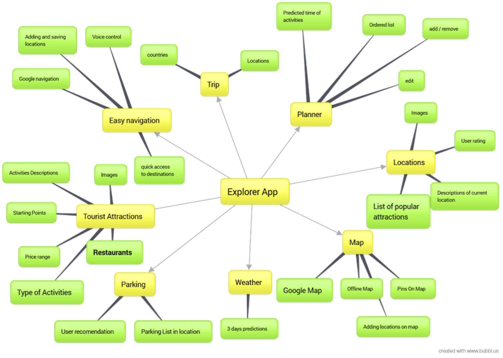
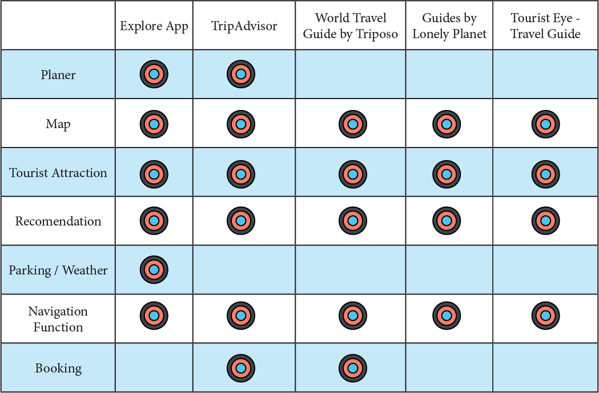

Web Design in DID
Basics of design and web design styles metods and additional informations
The New Way of Travel
Project Description
-
To develop an app of my choosing. I found that there was a niche in Travel market. Based on the insight of the qualitative research on user’s need within the domain mobility of travel applications we develop the concept of an “Explorer App”.
Main purpose and goals of Explorer App is to provide fast and easy overview on tourist attractions in selected area and create optimal to selected predisposition travel plan to create unique experience during your explorations.
-
Discovery process
Idea of Explorer App was created during one of my travels when I was trying to create my own travel plan for one week visit in Sicily. I notice there is no dedicated tool to combine newest technologies and the traditional paper travel guides. Then idea of connecting all the information from travel guides with use of map and useful tools during travel explorations was created. I start creating list of things that I miss during my travels for example: easy navigation between one attractions, predefined list of my day with predicted time to accomplish goals, fast and easy locations save (where I left my car, nice restaurant I pass by etc.) additional information about my chosen destinations like: best place to leave your car, weather in locations etc.
 -
Competitor analysis
During my research I discover only few Apps that focus on similar task or create similar experience. I focused only on few most popular competitor and applications that are similar to my TripAdvisor, World Travel Guide by Triposo, Guides by Lonely Planet, TouristEye - Travel Guide.
LonelyPlanet.com
Their articles and thorn-tree forum are especially useful for finding answers to stuff you can’t find in guidebooks.
Frommers.com
Great for hotel recommendations (really trustworthy reviews and only the best hotels in every budget are listed here). Also a good site for sightseeing and activity recommendations for mid- to high- budget travellers.
PlanMy.Travel
Lets you hire an expert based on your destination and interests from their elite panel of Travel Ninjas (made up of famous travel bloggers, professional travel consultants, conservationists, guidebook authors, etc). And the site provides you with collaboration tools so you can get the most out of your interactions with the Travel Ninjas.
TripAdvisor.com
Another excellent place to look for hotel recommendations. Just lookout for fake reviews. Only trust a rating that has more than 10 votes, and even then pay close attention to the content of the reviews. A useful strategy is to find hotels in guidebooks and other sites (like Frommer's, etc) and then look those up on TripAdvisor.
The New York Times Travel Section
Excellent travel articles, especially for those travelling for the 2nd or 3rd time to a place. Great recommendations for offbeat things to do. Hotel reviews tend to be for really expensive places though.
TripIt.com
Lets you forward all your travel plans, tickets, reservations, etc. and creates a nicely organized itinerary for you.
Rome2Rio.com
Lets you find all the ways to get from point A to point B anywhere in the world.
Google (company) is still the best source to find the many niche travel blogs available for finding specific types of recommendations. First, I start broad with searches like “things to do in [city],” but I usually skip to page 2-5. The first 1-2 pages are usually dominated by the largest, most SEO optimized websites. Second, I search specifically for niches I am interested in, such as: unique neighborhoods, best place to try local food, best coffee shops, craft breweries, cool bookstores and libraries, street art, and scenic running paths.
 -
Online surveys
I create my online surveys on Survey Monkey and I try to reach my targets on specific email address and social media (Facebook). Below I will present my questions and statistics


-
SWOT analysis
During my research and process of design an Explore App I notice few key Strengths an Weaknesses.Strengths:
Explore App is a unique in a concept of providing customer ready to use fully interactive guide that lead you through most popular and highest rated tourist attractions in selected area.
Another strong attribute of our App is easy and fast access to useful information during traveling in new areas like, online navigation tools, travel information and additional functions like localization of nearest parking and integrated weather information for fast and easy access to this type of information or fast and easy saving localization for further use (like car localisation in new place or interesting location that user want to come back later.
Weakness:
Current version of application is only online version so currently to get access to information user need internet connection.
Our project is based on predefined Tourist Guide, according to surveys this form of predefined guide is preferred only by 42.86% of tested users so that would be challenge to convince users to our unique experience during our Guides and to it efficiency.
This form of application would require quite extensive workload to maintain and update our most accurate and up to date tourist information.
Opportunities:
Explore App is in concept progressive app where we can add many functions and functionalities. I believe that application have extensive opportunity to grow and become one of essential tourist tool and help during travels and explorations.
Explore App can be integrated to many online tools that already exist and can become additional source of useful information, or Explore App itself can integrate even more functionalities from similar online solutions to become even bigger and stronger online platform.
Easier and faster internet connection around the world can only increase usage of online tools that help and make travelling easier and more pleasant. That create even more demand for online solutions like our App.
Threats:
Our biggest threat is competitive market place and hard to be reached in crowded application market.
-
User needs
During my research, online and through forums I create few most common user needs in relation to travel applications on mobile platforms.
- Offline accessibility – It’s most common request from users that travel abroad and want to avoid extensive roaming charges which can limit usability of applications.
- Ratting System – Many users mention when asked what is frequent factor when choosing target locations (Restaurants, tourist attractions or other places that can be commented and rated)
- Easy Navigation – Users expect fast and easy way to get directions to selected locations and interactive maps and online navigation is very common topic raised during conversations.
- Information – Users want short and brief explanation about target location but they want to have access to more extensive read about this place.
- List of attractions
Goals
Main purpose of application is to provide customize travel guide for customer and supply user with all necessary information for pleasant and comfortable traveling and exploring tourist attractions in target location. That’s key goals of Explore App.
- Provide predefined travel plan.
- Create customized plans based on user preferences.
- Collect all necessary information for selected travel guide.
- Define best order when traveling to be most efficient during travels.
- Easy navigation between locations on the list and outside of the guide scope.
-
Target Audience
Following on from the Discovery process, I have identified the following as the target audience of the website and mobile app:
Demographic
Gender: Mele, Female
Psycho graphic information • Concerned with health and appearance. • Healthy lifestyle and wellbeing. • Enjoys going online on smartphone and tablet • Big fan of travels and new places. • Tends to favor quality over economy • Finds fulfilment in her career and family • Values time with a small group of friends Behavioristic Segmentation Purchase occasion - special occasion (before travel) Benefits sought - Quality, service, economy, efficiency. User status - Nonuser, ex-user, potential user, first-time user, regular user. Usage Rate - Light user, medium user. Loyalty Rate - medium, strong. Readiness stage - Unaware, aware, informed, interested. Attitude toward product - Enthusiastic, positive.
Age: 18-60+
Income levels: Low Middle ++